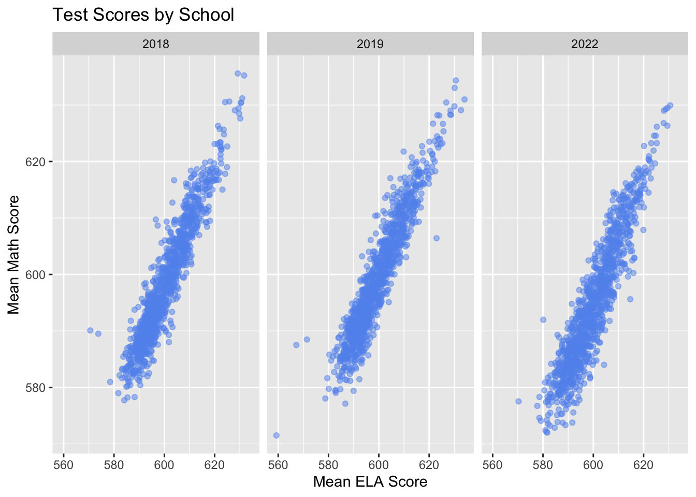
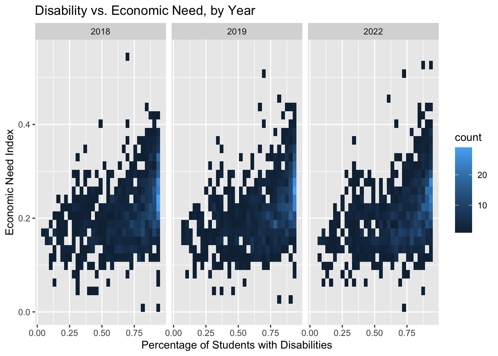

Chapter 5 Plots + notes: Part 1 (Reading & Math test scores)
PLOT 1: READING VS MATH (GOAL: SEE IF THERE’S A CORRELATION BETWEEN THE TWO) Reading vs math scores across the years; seeing if there’s a correlation between ELA & Math test scores

Takeaways: on the surface, reading and math scores seem to have a very strong positive correlation. There is also a noticeable drop in scores in 2022 which can probably be attributed to the onset of the Covid-19 pandemic
PLOT 2: OVERLAPPING HISTOGRAMS OF MATH/ELA SCORES FOR ALL 3 YEARS (GOAL: SEE WHICH STUDENTS PERFORM BETTER ON)
 Overlapping histograms to show relative similarity of distributions of the scores over the years; students seem to perform a bit better on ELA (blue)
Overlapping histograms to show relative similarity of distributions of the scores over the years; students seem to perform a bit better on ELA (blue)
PLOTS 3/4: SCORES OVER THE YEARS BY DISTRICT (GOAL: SEE HOW ONSET OF COVID-19 PANDEMIC IMPACTED SCORES) Cleveland dot plot of mean ELA scores & mean Math scores by district


There is a lot of variation in scores between districts for both Math & ELA scores; some districts are very high performing relative to the rest of the group. Also, math scores got better from 2018->2019, but way worse in 2022.ELA scores regressed from 2018-2019, but then improved (almost across the board) in 2022. This is interesting Note; the 2018/2019 ELA scores for District 4 are nearly identical, so it looks like we’re missing a year of data
5.1 Plots + Notes: Part 2 (NYC Student Demographics & Indicators of success)
PLOT 5: % ENI vs SWD (GOAL: CRITIQUE NYC DOE’S ENI + draw link to funding in takeaways)

There seems to be a positive association between ENI and %SWD (as noted by the cluster of light blue, and the trend from dark to lighter). This is interesting because disability status is not one of the explicit factors in calculating a student/school’s ENI (which can be found here https://data.cccnewyork.org/data/map/1371/student-economic-need-index#1371/a/5/1622/127/a/a)
PLOT 6: BOXPLOTS TO GET A PICTURE OF WHAT RACIAL & % ELL DEMOGRAPHICS LOOK LIKE PER DISTRICT 
Takeaways; Most NYC School Districts are majority POC; 1 outlier district
## [1] 0.5336681## [1] 0.5474183## [1] 0.5848507Shows that it is district 31; performed 11/32 or better in both Math & ELA both years (not overwhelmingly great scores)
PLOTS 7/8: PARALLEL COORDINATE PLOTS BY EXAM SUBJECT (GOAL: SEE WHICH VARIABLES HAVE AN ASSOCIATION WITH TEST SCORE) (maybe add a Biplot & do some PCA here)
ELA first: column indices of interest are 3 (score), 5 (Total Enrollment),13 (% students w/ disabilities), 14 (% English language learners), 16 (% Poverty), 19 (% POC)
# Adding a Year column so we can add color to distinguish across the years

MATH second: # ELA first: column indices of interest are 3 (score), 5(Total Enrollment), 13 (% students w/ disabilities), 14 (% English language learners), 15 (% Poverty), 19 (% POC)

Takeaways: Put scores in the middle to determine the relationship between each variable and performance (MEAT OF THE ANALYSIS HERE)